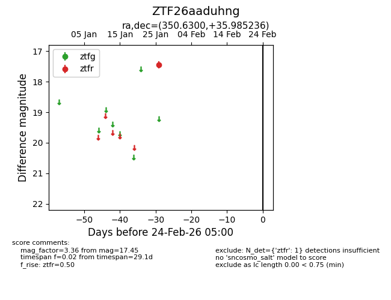
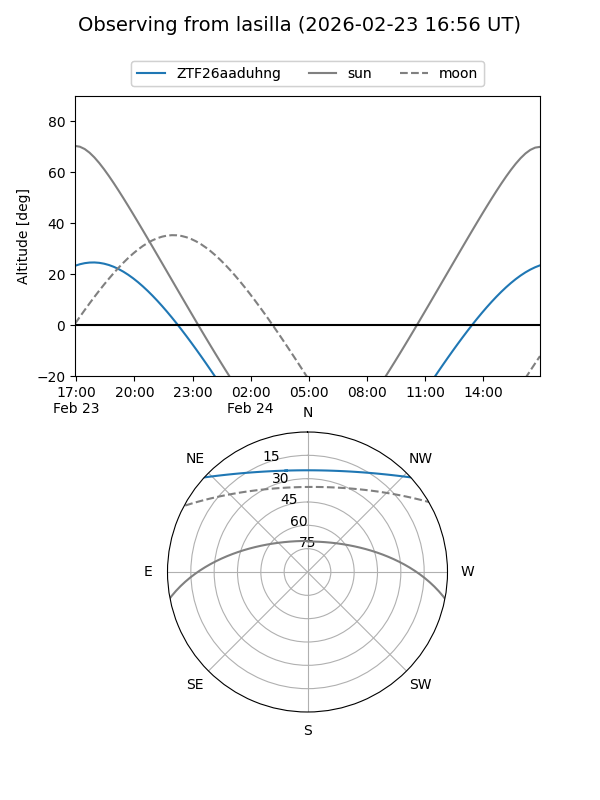
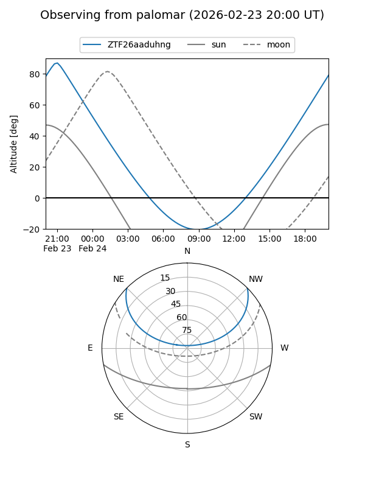

ZTF26aaduhng
Target ZTF26aaduhng at 2026-01-28 04:11
Aliases and brokers:
FINK: link
Lasair: link
ALeRCE: link
alt names
ZTF26aaduhng (ztf,fink_ztf)
Coordinates:
equatorial (ra, dec) = 350.6300,+35.98524
equatorial (HMS+DMS) = 23:22:31.20,+35:59:06.85
galactic (l, b) = (103.4323,-23.49695)
Flags:
Photometry:
last ztfr=17.45
1 ztfr detections
Lightcurve

Visibility


Additional plots